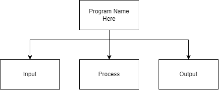
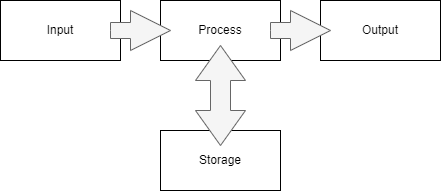

Top Down Design in Programming
As we have seen above, top-down design is a process of breaking a complicated problem down into simpler steps that actually can be solved. In programming one of the easiest models to follow for beginner programmers is the Input-Process-Output Model (IPO Model). You are most likely already familiar with this model, even if you do not realize you are using it. In life there are many examples of getting information, doing something with it and then returning the result. The most common example is probably the problems you do in math class every day. You get information, do calculations and then return the answer. Video games are another great example. You do an action on a controller, the game does some recalculations and then refreshes the screen for you. We are going to use this model to help us solve our computer problems. The first step in our top-down design will always be to break the problem up into input-process-output.
But Sometimes I need to Store Something!
As mentioned above, “Input-Process-Output” is a very useful model to help solve problems. It is kind of misleading though because one very important point is missing, storage. What actually really happens is that we get information and then place it somewhere (write it down in a math problem or use a variable like x to hold some important number), we then process it (do some calculations), we get the answer and then give it back. We need storage as a temporary location to keep information. In really long problems many pieces of information might be kept, we might even have information that we just need to keep for some intermediate step. The real model looks more like:
In computer science programmers call these temporary storage locations variables.